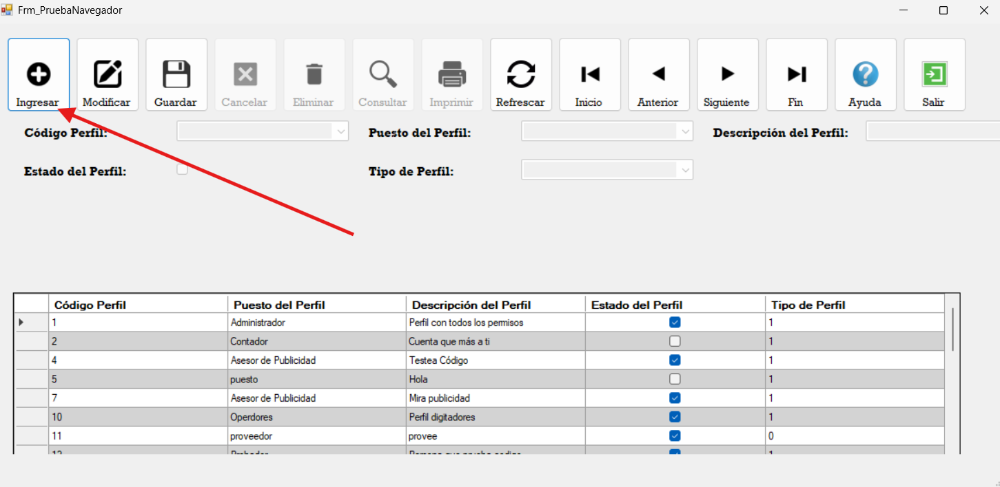
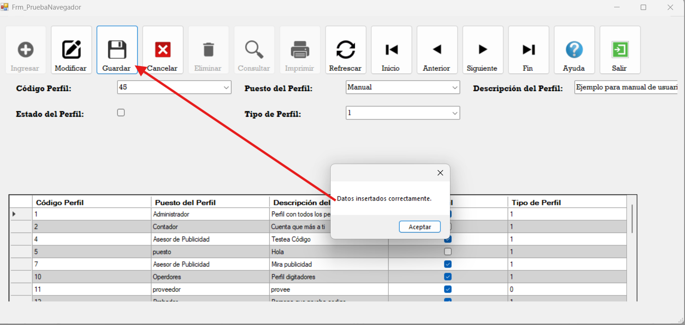
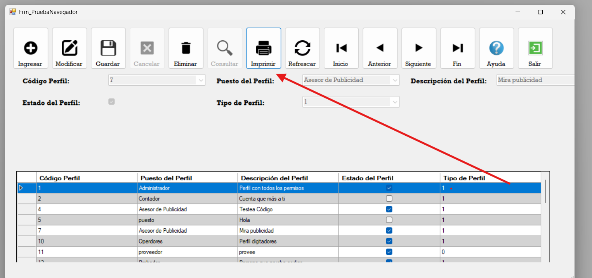

<!DOCTYPE HTML PUBLIC "-//IETF//DTD HTML//EN">
<HTML>
<HEAD>
<meta name="GENERATOR" content="Microsoft&reg; HTML Help Workshop 4.1">
<TITLE>Ayuda Navegador</TITLE>
  <style type="text/css">
    body { font-family: Arial, sans-serif; margin: 12px; }
    h1 { font-size: 18pt; }
    .screenshot {
      max-width: 50%;
      height: auto;
      border: 1px solid #ccc;
      display: block;
      margin: 12px auto;
    }
    p { margin: 10px 0; }
</HEAD>
<BODY>
  <h1>Ayuda del Navegador</h1>

  
  <p>Este es un formulario creado con navegador. Este funciona para crear formularios dinamicos con tablas maestras.</p>

  
  <p>Se selecciona el boton de registro y se ingresan los datos segun la tabla.</p>

  
  <p>Despues de ingresar los datos se pulsa Guardar y debe aparecer un mensaje que dice Datos ingresado correctamente.</p>

  
  <p>Para modificar o eliminar se selecciona un dato en el DataGridView y se pulsa Modificar o Eliminar segun lo indique el usuario.</p>

  
  <p>El boton Imprimir abre un reporte de Crystal Report.</p>


</BODY>
</HTML>
